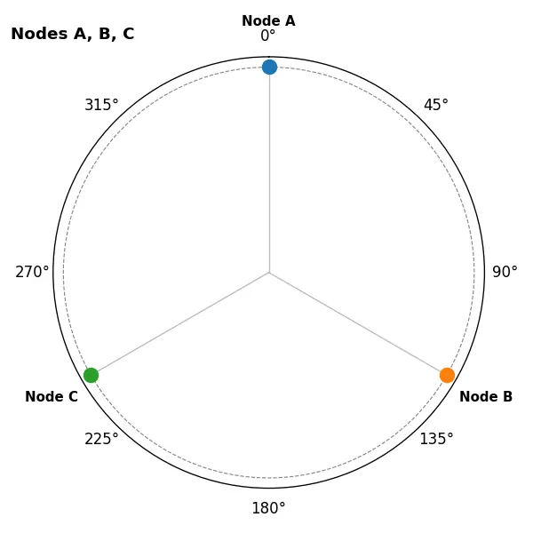
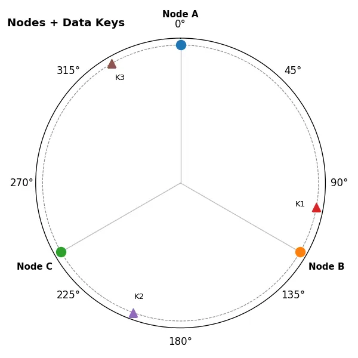
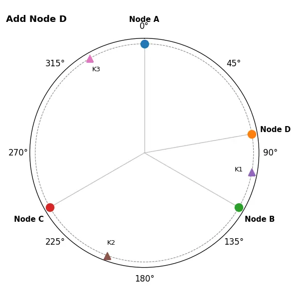
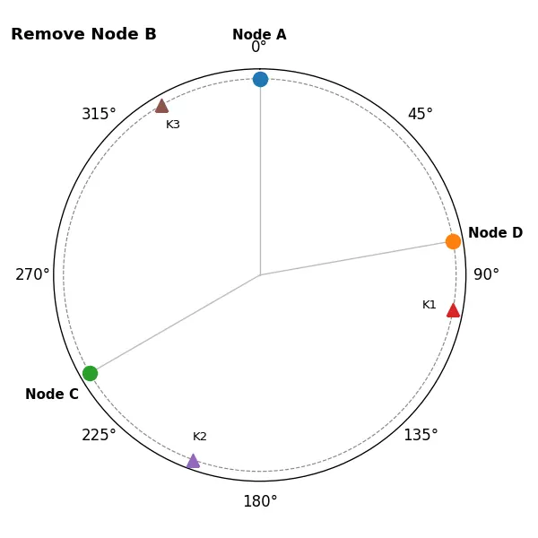

Last modified: May 05, 2025
This article is written in: 🇺🇸
Consistent Hashing
Imagine you're organizing books in a vast library with shelves arranged in a circle. Each book’s position is chosen by the first letter of its title, looping back to the beginning after Z. When you install a new shelf or remove one, you’d prefer not to reshuffle every book—only a small, predictable subset should move. Consistent hashing gives distributed computer systems that same flexibility: data spreads evenly across servers, yet when servers come or go only a fraction of keys are remapped.
After working through this material you should be able to answer:
- What is consistent hashing, and how does it differ from traditional hashing?
- How does the hash‑ring abstraction work, and how are nodes and data mapped onto it?
- Why does adding or removing a node trigger only limited data movement?
- How do virtual nodes (VNodes) improve load‑balancing and scalability?
- Where is consistent hashing used in the real world, and what pitfalls can appear in practice?
The Hash Ring Concept
Consistent hashing imagines the entire hash space as a circle.
A typical implementation uses a 32-bit hash (0 → $2^{32} - 1$); after the last value the count “wraps” back to 0, so the ends meet like the edges of a clock dial.
- The ring abstraction lets us reason in angles, but it really represents a modulo - $2^{32}$ number line.
- Data movement is proportional to the arc length affected—so scaling out (or shrinking) causes only $O(k / n)$ re-shuffles instead of moving everything.
- The same mechanism underpins virtual nodes (VNodes): each physical server advertises many points on the circle, smoothing load without changing the fundamental rules.
Hash-ring overview
Hash Ring:
0° (hash 0 or 2³²-1)
●
│
│
270° (¾·2³²) ●────┼────● 90° (¼·2³²)
│
│
●
180° (½·2³²)
- Every point on the circumference corresponds to a possible hash value.
- Moving clockwise always increases the hash (mod $2^{32}$) and eventually loops back to 0 (0°).
- A node “owns” the arc between its position and the next node clockwise. Any key that hashes into that arc will be stored on that node.
Mapping Nodes and Data onto the Ring
Assume three servers —Node A, Node B and Node C.
Placing nodes

| Node |
Hash angle |
Covers hash interval* |
| Node A |
0° |
(240° → 0°] |
| Node B |
120° |
(0° → 120°] |
| Node C |
240° |
(120° → 240°] |
Interval is open at the start and closed at the end, so each key maps to exactly one node.
Placing data keys
| Key |
Hash angle |
Stored on… |
| K1 |
100° |
Node B |
| K2 |
200° |
Node C |
| K3 |
330° |
Node A (0°) – wraps past 360° |

- Rule of thumb → “First node clockwise.”
- Each key walks clockwise until it hits a node marker; that node stores the key.
Adding and Removing Nodes
A major advantage of consistent hashing is that only the keys that lie in the affected arc move when the node set changes.
Adding Node D at 80°

- Node D splits Node B’s old interval. Only keys in the slice (0° → 80°] are affected.
- In this example that is just K1, which shifts from Node B to Node D. All other keys stay put.
Removing Node B

- When a node departs, its entire arc is reassigned to the next clockwise node. Here Node C inherits Node B’s range.
- Keys that were on Node B (e.g. K1) slide clockwise to Node C; keys on other nodes remain untouched.
Virtual Nodes (VNodes)
To smooth out load in clusters with uneven node counts or heterogeneous hardware, each physical server is hashed many times, producing virtual nodes scattered around the ring. Requests are balanced across those VNodes, so even if one physical machine is temporarily overloaded only a small slice of the hash‑space suffers.
Practical Example: Distributed Caching with Consistent Hashing
Consider a web application using a distributed cache to store session data. Let's see how consistent hashing helps in this scenario.
Without Consistent Hashing
- Servers are selected using a simple modulo operation:
server = hash(key) % number_of_servers.
- Adding or removing a server changes
number_of_servers, causing most keys to remap to different servers.
- This results in cache misses and increased load on the database.
With Consistent Hashing
- Servers and keys are placed on the hash ring.
- Only keys that would map to the affected servers need to be remapped.
- The majority of keys continue to map to the same servers, preserving cache hits.
Virtual Nodes (VNodes)
To enhance data distribution and fault tolerance, consistent hashing often uses virtual nodes.
What Are Virtual Nodes?
- Each physical node is represented multiple times on the hash ring at different positions.
- For example, Node A might be placed at positions 5°, 120°, and 250°.
Benefits of Virtual Nodes
- Improved load balancing is achieved as increasing the number of points on the hash ring leads to a more even distribution of data among nodes.
- Easier scaling is possible because adding or removing a physical node only requires redistributing its associated virtual nodes, minimizing disruption.
- Supporting heterogeneous nodes allows nodes with greater capacity to have more virtual nodes, enabling them to handle a proportionally larger share of data and requests.
Implementing Consistent Hashing
Let's walk through how you might implement consistent hashing in practice.
Step 1: Hash Function Selection
Choose a hash function that distributes values uniformly, such as MD5 or SHA-1.
Step 2: Mapping Nodes to the Ring
Assign each node (or virtual node) a hash value to determine its position on the ring.
Step 3: Mapping Keys to Nodes
For each data key:
- Compute its hash value.
- Locate the first node on the ring whose hash value is greater than or equal to the key's hash.
- If no such node exists (the key's hash is higher than any node's hash), wrap around to the first node on the ring.
Sample Code Snippet (Pseudocode)
# Import a reliable hash function
import hashlib
# Function to compute hash value
def compute_hash(key):
return int(hashlib.sha1(key.encode()).hexdigest(), 16)
# Nodes in the system
nodes = ['NodeA', 'NodeB', 'NodeC']
# Create the ring with virtual nodes
ring = {}
virtual_nodes = 100 # Number of virtual nodes per physical node
for node in nodes:
for i in range(virtual_nodes):
vnode_key = f"{node}:{i}"
hash_val = compute_hash(vnode_key)
ring[hash_val] = node
# Sort the hash ring
sorted_hashes = sorted(ring.keys())
# Function to find the node for a given key
def get_node(key):
hash_val = compute_hash(key)
for node_hash in sorted_hashes:
if hash_val <= node_hash:
return ring[node_hash]
return ring[sorted_hashes[0]] # Wrap around
# Example usage
key = 'my_data_key'
assigned_node = get_node(key)
print(f"Key '{key}' is assigned to {assigned_node}")
- The key
'my_data_key' is assigned to a node based on its hash value.
- If you add or remove nodes, only the keys that map to the affected virtual nodes need to change assignments.
Real‑World Uses & Challenges
| System |
Why uses consistent hashing |
Notable wrinkles |
| Amazon Dynamo / DynamoDB |
On‑line shopping carts must survive node loss during Black Friday |
Requires anti‑entropy sync to handle “sloppy” quorums |
| Apache Cassandra |
Ring topology underpins token ranges for partitions |
Hot partitions can appear if token assignment is careless |
| Memcached client libraries |
Keeps cache‑hit rate high during live scaling |
Need client‑side agreement on hash function |
| CDNs (e.g., Akamai) |
Predictable client → edge‑server mapping |
Must integrate geo‑routing and health‑checks |
Implementation challenges include choosing a non‑biased hash function, deciding how many VNodes per server, and coordinating ring state changes across clients.
Advantages of Consistent Hashing
- The scalability of consistent hashing allows nodes to be added or removed with minimal impact on existing data placement.
- Efficiency is enhanced by reducing cache misses and lowering database load in distributed caching systems.
- Built-in fault tolerance ensures the system remains operational even if some nodes fail.
- A balanced load is achieved by distributing data and requests evenly across available nodes.
Challenges and Considerations
- Hotspots can arise if the hash function or data keys do not distribute data uniformly, leading to overloaded nodes.
- Choosing the right hash function is critical to ensure a good spread of hash values across nodes.
- The complexity of implementing virtual nodes and managing the hash ring can increase system overhead.
Best Practices
- Incorporating virtual nodes improves load distribution and minimizes hotspots.
- Regularly monitor system performance to identify and address uneven load or emerging bottlenecks.
- Selecting a consistent hash function that avoids clustering of values ensures better distribution of data.
- Designing for scaling from the outset helps the system accommodate growth and handle additional nodes smoothly.